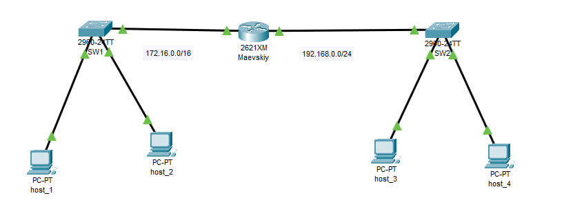
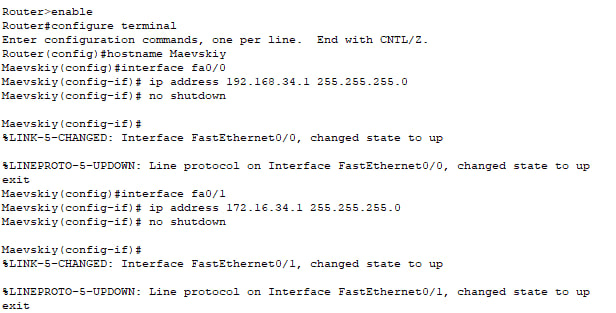

Предмет: Основы компьютерных сетей
Студент: Маевский Никита Сергеевич
Группа: 1ЭИТ1-9.24
Год: 2025
Ниже представлена итоговая схема сети, собранная в Cisco Packet Tracer. В неё входят два коммутатора, один маршрутизатор и четыре конечных устройства (хоста).

enable
configure terminal
hostname Maevskiy
interface fa0/0
ip address 192.168.34.1 255.255.255.0
no shutdown
exit
interface fa0/1
ip address 172.16.34.1 255.255.255.0
no shutdown
exit
write

Имя маршрутизатора было изменено на Maevskiy как по заданию.
Все IP-адреса имеют третий октет 34, что соответствует номеру студента в списке группы.
На данном скриншоте показан результат команды ping между host_1 и host_3. Как видно, соединение успешно установлено, сеть функционирует корректно.
Контрольная точка успешно выполнена. Все устройства настроены согласно требованиям: заданы IP-адреса, изменён hostname, проверена связность. Визуальное представление и HTML-оформление отчёта делают его доступным и понятным. Рабочая конфигурация сохранена в .pkt-файле.